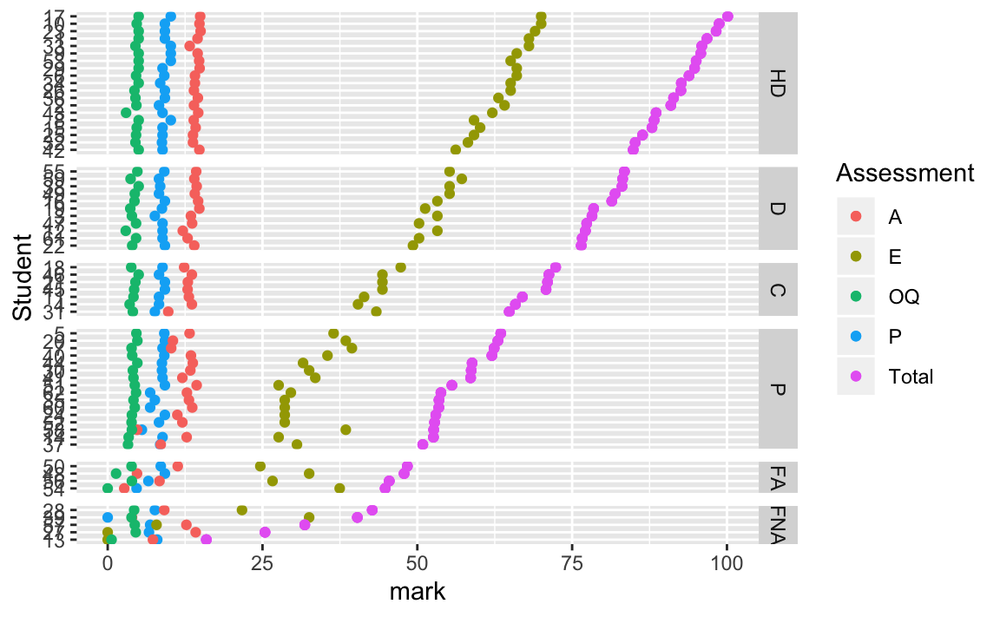
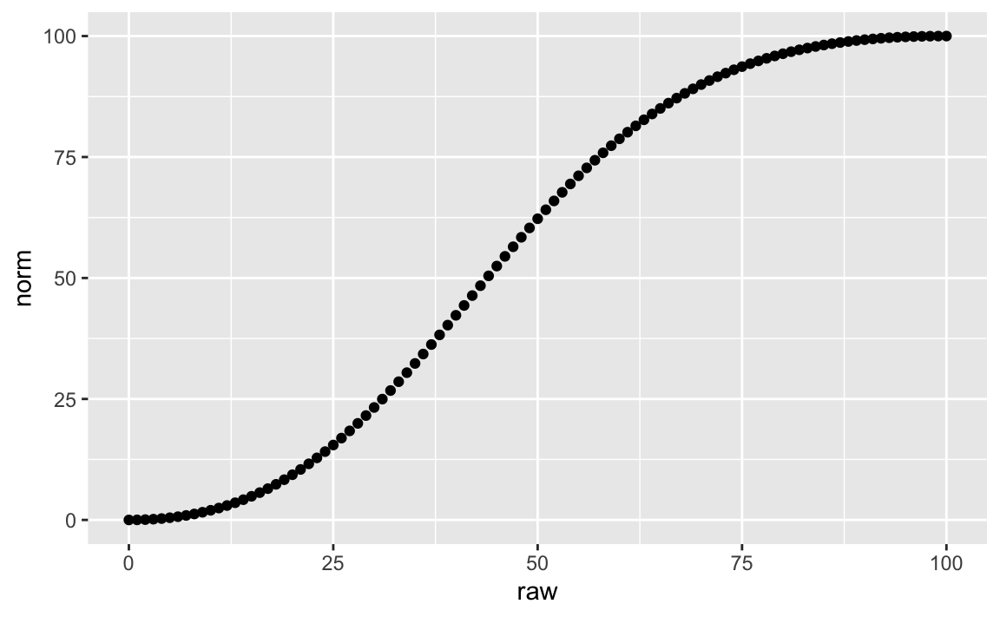
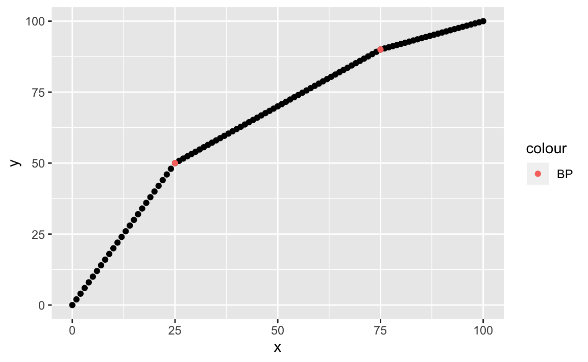
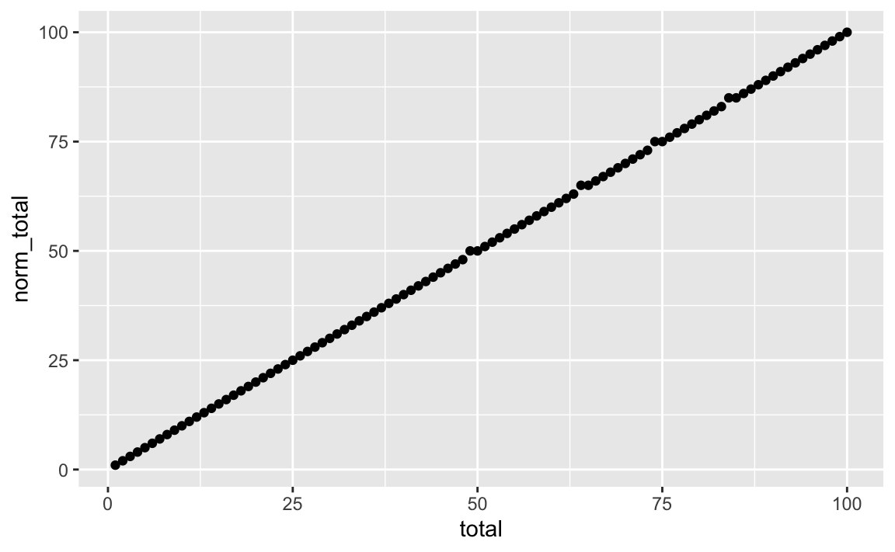

analyis-marks.RmdThere is some in-built data to play with. This is the anonomised SMI 2018 data.
## # A tibble: 63 x 21
## ID `Assignment 1 (… `Assignment 2 (… `Assignment 3 (… `Assignment 4 (…
## <chr> <chr> <chr> <dbl> <dbl>
## 1 Tota… 37 42 30 49
## 2 1 36 42 27.5 47.5
## 3 2 37 38 28.5 43
## 4 3 37 39 29 34
## 5 4 37 39 29.5 32.5
## 6 5 37 39 25 38
## 7 6 36 38 30 45.5
## 8 7 <NA> 39 23.5 41
## 9 8 32 41 29 42.5
## 10 9 34.5 40 30 49
## # … with 53 more rows, and 16 more variables: `Assignment 5 (84889)` <dbl>,
## # `Project (85361)` <dbl>, `Model selection (85555)` <dbl>, `Information
## # criteria (85704)` <dbl>, `Cross-validation (85733)` <dbl>, `Polynomial
## # regression (85735)` <dbl>, `Representing categorical variables in R
## # (86463)` <dbl>, `One-way ANOVA (86466)` <dbl>, `Two-way ANOVA
## # (86470)` <dbl>, `ANCOVA (86471)` <dbl>, Q1 <dbl>, Q2 <dbl>, Q3 <dbl>,
## # Q4 <dbl>, Q5 <dbl>, Q6 <dbl>This is the form that you get from canvas. We have also added the marks for the exam questions columns Q1 to Q6.
Canvas sets any mark that the students did not submit as NA, and exemptions as EX.
## # A tibble: 2 x 21
## ID `Assignment 1 (… `Assignment 2 (… `Assignment 3 (… `Assignment 4 (…
## <chr> <chr> <chr> <dbl> <dbl>
## 1 13 EX 7 16.5 30
## 2 46 EX 28.5 29 48
## # … with 16 more variables: `Assignment 5 (84889)` <dbl>, `Project
## # (85361)` <dbl>, `Model selection (85555)` <dbl>, `Information criteria
## # (85704)` <dbl>, `Cross-validation (85733)` <dbl>, `Polynomial regression
## # (85735)` <dbl>, `Representing categorical variables in R (86463)` <dbl>,
## # `One-way ANOVA (86466)` <dbl>, `Two-way ANOVA (86470)` <dbl>, `ANCOVA
## # (86471)` <dbl>, Q1 <dbl>, Q2 <dbl>, Q3 <dbl>, Q4 <dbl>, Q5 <dbl>, Q6 <dbl>With this data, we have 5 assignments, then the project, then 8 online quizzes, and finally the exam questions. We will rename this to make cleaning easier.
We can convert missing to zero and EX to NA with the following:
## # A tibble: 63 x 21
## ID A1 A2 A3 A4 A5 P OQ01 OQ02 OQ03 OQ04 OQ05 OQ06
## <chr> <chr> <chr> <dbl> <dbl> <dbl> <dbl> <dbl> <dbl> <dbl> <dbl> <dbl> <dbl>
## 1 Tota… 37 42 30 49 46 105 3 3 2 4 3 3
## 2 1 36 42 27.5 47.5 45 97 3 3 2 4 3 3
## 3 2 37 38 28.5 43 42 87 3 3 2 3 2 3
## 4 3 37 39 29 34 41 80 3 3 1 3 2 1
## 5 4 37 39 29.5 32.5 44 87 3 3 0 NA 2 3
## 6 5 37 39 25 38 40 96 3 3 2 3 3 3
## 7 6 36 38 30 45.5 41 96 2.5 3 1 4 3 3
## 8 7 <NA> 39 23.5 41 40 93 3 2 1 4 2 1
## 9 8 32 41 29 42.5 44 107 3 3 2 4 3 3
## 10 9 34.5 40 30 49 44 107 3 3 2 4 3 3
## # … with 53 more rows, and 8 more variables: OQ07 <dbl>, OQ08 <dbl>, Q1 <dbl>,
## # Q2 <dbl>, Q3 <dbl>, Q4 <dbl>, Q5 <dbl>, Q6 <dbl>SMI_2018_marks <-
SMI_2018_marks %>%
clean_marks_df("^A") %>%
clean_marks_df("^P$") %>%
clean_marks_df("^OQ") %>%
clean_marks_df("^Q")Note that we can use regular expressions to give the columns that need cleaning.
For each assessment piece, we can calculate the proportions. This assumes that there is a row with the totals. In canvas, this is the first row.
SMI_2018_marks <-
SMI_2018_marks %>%
get_prop_df("^A", total_row = 1) %>% # Assignments
get_prop_df("^P$", total_row = 1) %>% # project
get_prop_df("^OQ", total_row = 1) # Online quizzes
SMI_2018_marks## # A tibble: 63 x 21
## ID A1 A2 A3 A4 A5 P OQ01 OQ02 OQ03 OQ04 OQ05 OQ06
## <chr> <dbl> <dbl> <dbl> <dbl> <dbl> <dbl> <dbl> <dbl> <dbl> <dbl> <dbl> <dbl>
## 1 Tota… 1 1 1 1 1 1 1 1 1 1 1 1
## 2 1 0.973 1 0.917 0.969 0.978 0.924 1 1 1 1 1 1
## 3 2 1 0.905 0.95 0.878 0.913 0.829 1 1 1 0.75 0.667 1
## 4 3 1 0.929 0.967 0.694 0.891 0.762 1 1 0.5 0.75 0.667 0.333
## 5 4 1 0.929 0.983 0.663 0.957 0.829 1 1 0 0 0.667 1
## 6 5 1 0.929 0.833 0.776 0.870 0.914 1 1 1 0.75 1 1
## 7 6 0.973 0.905 1 0.929 0.891 0.914 0.833 1 0.5 1 1 1
## 8 7 0 0.929 0.783 0.837 0.870 0.886 1 0.667 0.5 1 0.667 0.333
## 9 8 0.865 0.976 0.967 0.867 0.957 1.02 1 1 1 1 1 1
## 10 9 0.932 0.952 1 1 0.957 1.02 1 1 1 1 1 1
## # … with 53 more rows, and 8 more variables: OQ07 <dbl>, OQ08 <dbl>, Q1 <dbl>,
## # Q2 <dbl>, Q3 <dbl>, Q4 <dbl>, Q5 <dbl>, Q6 <dbl>For the exam, we need to exam total, we obtain this by adding the question columns
And then convert this to a proportion and the exam questions.
## # A tibble: 63 x 22
## ID A1 A2 A3 A4 A5 P OQ01 OQ02 OQ03 OQ04 OQ05 OQ06
## <chr> <dbl> <dbl> <dbl> <dbl> <dbl> <dbl> <dbl> <dbl> <dbl> <dbl> <dbl> <dbl>
## 1 Tota… 1 1 1 1 1 1 1 1 1 1 1 1
## 2 1 0.973 1 0.917 0.969 0.978 0.924 1 1 1 1 1 1
## 3 2 1 0.905 0.95 0.878 0.913 0.829 1 1 1 0.75 0.667 1
## 4 3 1 0.929 0.967 0.694 0.891 0.762 1 1 0.5 0.75 0.667 0.333
## 5 4 1 0.929 0.983 0.663 0.957 0.829 1 1 0 0 0.667 1
## 6 5 1 0.929 0.833 0.776 0.870 0.914 1 1 1 0.75 1 1
## 7 6 0.973 0.905 1 0.929 0.891 0.914 0.833 1 0.5 1 1 1
## 8 7 0 0.929 0.783 0.837 0.870 0.886 1 0.667 0.5 1 0.667 0.333
## 9 8 0.865 0.976 0.967 0.867 0.957 1.02 1 1 1 1 1 1
## 10 9 0.932 0.952 1 1 0.957 1.02 1 1 1 1 1 1
## # … with 53 more rows, and 9 more variables: OQ07 <dbl>, OQ08 <dbl>, Q1 <dbl>,
## # Q2 <dbl>, Q3 <dbl>, Q4 <dbl>, Q5 <dbl>, Q6 <dbl>, E <dbl>So we now have the proportion for the various parts of the course. We need to convert this to proportion of the assessment.
## # A tibble: 63 x 5
## ID A OQ P E
## <chr> <dbl> <dbl> <dbl> <dbl>
## 1 Totals 1 1 1 1
## 2 1 0.967 1 0.924 0.972
## 3 2 0.929 0.927 0.829 0.915
## 4 3 0.896 0.781 0.762 0.761
## 5 4 0.906 0.708 0.829 0.577
## 6 5 0.881 0.927 0.914 0.521
## 7 6 0.940 0.917 0.914 0.944
## 8 7 0.684 0.771 0.886 0.563
## 9 8 0.926 1 1.02 0.845
## 10 9 0.968 1 1.02 0.944
## # … with 53 more rows## # A tibble: 63 x 5
## ID A OQ P E
## <chr> <dbl> <dbl> <dbl> <dbl>
## 1 Totals 15 5 10 70
## 2 1 14.5 5 9.24 68.0
## 3 2 13.9 4.64 8.29 64.1
## 4 3 13.4 3.91 7.62 53.2
## 5 4 13.6 3.54 8.29 40.4
## 6 5 13.2 4.64 9.14 36.5
## 7 6 14.1 4.58 9.14 66.1
## 8 7 10.3 3.85 8.86 39.4
## 9 8 13.9 5 10.2 59.2
## 10 9 14.5 5 10.2 66.1
## # … with 53 more rows## # A tibble: 63 x 6
## ID A OQ P E Total
## <chr> <dbl> <dbl> <dbl> <dbl> <dbl>
## 1 Totals 15 5 10 70 100
## 2 1 14.5 5 9.24 68.0 96.8
## 3 2 13.9 4.64 8.29 64.1 90.9
## 4 3 13.4 3.91 7.62 53.2 78.2
## 5 4 13.6 3.54 8.29 40.4 65.8
## 6 5 13.2 4.64 9.14 36.5 63.5
## 7 6 14.1 4.58 9.14 66.1 93.9
## 8 7 10.3 3.85 8.86 39.4 62.4
## 9 8 13.9 5 10.2 59.2 88.2
## 10 9 14.5 5 10.2 66.1 95.8
## # … with 53 more rows## # A tibble: 7 x 3
## grade lower upper
## <chr> <dbl> <dbl>
## 1 FNS 0 0
## 2 FNA 1 44
## 3 FA 45 49
## 4 P 50 64
## 5 C 65 74
## 6 D 75 84
## 7 HD 85 100## # A tibble: 63 x 7
## ID A OQ P E Total grade
## <chr> <dbl> <dbl> <dbl> <dbl> <dbl> <fct>
## 1 Totals 15 5 10 70 100 HD
## 2 1 14.5 5 9.24 68.0 96.8 HD
## 3 2 13.9 4.64 8.29 64.1 90.9 HD
## 4 3 13.4 3.91 7.62 53.2 78.2 D
## 5 4 13.6 3.54 8.29 40.4 65.8 C
## 6 5 13.2 4.64 9.14 36.5 63.5 P
## 7 6 14.1 4.58 9.14 66.1 93.9 HD
## 8 7 10.3 3.85 8.86 39.4 62.4 P
## 9 8 13.9 5 10.2 59.2 88.2 HD
## 10 9 14.5 5 10.2 66.1 95.8 HD
## # … with 53 more rowsFinally we can get rid of the totals column
## # A tibble: 62 x 26
## ID A1 A2 A3 A4 A5 P OQ01 OQ02 OQ03 OQ04 OQ05 OQ06
## <chr> <dbl> <dbl> <dbl> <dbl> <dbl> <dbl> <dbl> <dbl> <dbl> <dbl> <dbl> <dbl>
## 1 1 0.973 1 0.917 0.969 0.978 9.24 1 1 1 1 1 1
## 2 2 1 0.905 0.95 0.878 0.913 8.29 1 1 1 0.75 0.667 1
## 3 3 1 0.929 0.967 0.694 0.891 7.62 1 1 0.5 0.75 0.667 0.333
## 4 4 1 0.929 0.983 0.663 0.957 8.29 1 1 0 0 0.667 1
## 5 5 1 0.929 0.833 0.776 0.870 9.14 1 1 1 0.75 1 1
## 6 6 0.973 0.905 1 0.929 0.891 9.14 0.833 1 0.5 1 1 1
## 7 7 0 0.929 0.783 0.837 0.870 8.86 1 0.667 0.5 1 0.667 0.333
## 8 8 0.865 0.976 0.967 0.867 0.957 10.2 1 1 1 1 1 1
## 9 9 0.932 0.952 1 1 0.957 10.2 1 1 1 1 1 1
## 10 10 0.973 0.988 1 1 0.978 9.24 1 1 1 1 1 1
## # … with 52 more rows, and 13 more variables: OQ07 <dbl>, OQ08 <dbl>, Q1 <dbl>,
## # Q2 <dbl>, Q3 <dbl>, Q4 <dbl>, Q5 <dbl>, Q6 <dbl>, E <dbl>, A <dbl>,
## # OQ <dbl>, Total <dbl>, grade <fct>We can get a summary of each grade for the grade roster summary with
## # A tibble: 6 x 4
## grade n N Prop
## <fct> <int> <int> <dbl>
## 1 FNA 5 62 0.08
## 2 FA 4 62 0.06
## 3 P 16 62 0.26
## 4 C 7 62 0.11
## 5 D 11 62 0.18
## 6 HD 19 62 0.31First we can look at individual students breakdown for each section of the course with the plot_assessment() plot.

This normalisation works on the logit scale
tibble(raw = 0:100,
norm = norm_glonek(raw, a = 0.5, b = 2)) %>%
ggplot(aes(raw, norm)) +
geom_point()
Applying this to the SMI dataset we get
For this method, we give some boundary points, for example, assume that we would like to map a mark of 25 to 50, and a mark of 75 to 90.
First we set up the boundaries.
It will not let you scale down. Next we will illustrate the norm on the marks 0 - 100:
And plot the results

We can compare the raw and norm
## # A tibble: 6 x 7
## raw_grade FNA FA P C D HD
## <fct> <dbl> <dbl> <dbl> <dbl> <dbl> <dbl>
## 1 FNA 5 0 0 0 0 0
## 2 FA 0 2 2 0 0 0
## 3 P 0 0 8 4 4 0
## 4 C 0 0 0 0 3 4
## 5 D 0 0 0 0 0 11
## 6 HD 0 0 0 0 0 19df <- tibble(
total = 1:100
)
df <- df %>%
mutate(norm_total = add_mccann_spike(total))
df %>% ggplot(aes(total, norm_total)) + geom_point()
## # A tibble: 6 x 7
## raw_grade FNA FA P C D HD
## <fct> <dbl> <dbl> <dbl> <dbl> <dbl> <dbl>
## 1 FNA 44 0 0 0 0 0
## 2 FA 0 4 1 0 0 0
## 3 P 0 0 14 1 0 0
## 4 C 0 0 0 9 1 0
## 5 D 0 0 0 0 9 1
## 6 HD 0 0 0 0 0 16You can get the student IDs from the grade roster with
## [1] "COURSE GRADE ROSTER,,,,,,,,,,,"
## [2] "Date:,21-Jun-19,,,,,,,,,,"
## [3] "Oprid:,a1120722,,,,,,,,,,"
## [4] "Subject:,STATS,,,,,,,,,,"
## [5] "Catalog Nbr:,7014,,,,,,,,,,"
## [6] "Term:,3910,,,,,,,,,,"
## [7] ",,,,,,,,,,,"
## [8] "EmplID,Last Name,First Name,Middle Name,Class Nbr,Approval Status,Grade Roster Type,Mark/Grade Input,Transcript Note ID,Transcript Note,Term,Academic Career"
## [9] "1,A,aa, ,13482,Not Review,Final, , ,,3910,PGRS"
## [10] "2,B,bb,,13482,Not Review,Final, , ,,3910,PGRS"
## [11] "3,C,cc,,13482,Not Review,Final, , ,,3910,PGRS"
## [12] "4,D,dd, ,13482,Not Review,Final, , ,,3910,NAWD"
## [13] "5,E,ee,,13482,Not Review,Final, , ,,3910,PGRS"
## [14] "6,F,ff,,13482,Not Review,Final, , ,,3910,PGRS"
## [15] "7,G,gg,,13482,Not Review,Final, , ,,3910,PGRS"
## [16] "8,H,gg,,13482,Not Review,Final, , ,,3910,PGRS"## # A tibble: 8 x 4
## EmplID `Last Name` `First Name` `Middle Name`
## <dbl> <chr> <chr> <lgl>
## 1 1 A aa NA
## 2 2 B bb NA
## 3 3 C cc NA
## 4 4 D dd NA
## 5 5 E ee NA
## 6 6 F ff NA
## 7 7 G gg NA
## 8 8 H gg NAThe function fill_grade_roster() will put the marks into the blank grade roster.
For this example, we have a grade roster
## [1] "COURSE GRADE ROSTER,,,,,,,,,,,"
## [2] "Date:,21-Jun-19,,,,,,,,,,"
## [3] "Oprid:,a1120722,,,,,,,,,,"
## [4] "Subject:,STATS,,,,,,,,,,"
## [5] "Catalog Nbr:,7014,,,,,,,,,,"
## [6] "Term:,3910,,,,,,,,,,"
## [7] ",,,,,,,,,,,"
## [8] "EmplID,Last Name,First Name,Middle Name,Class Nbr,Approval Status,Grade Roster Type,Mark/Grade Input,Transcript Note ID,Transcript Note,Term,Academic Career"
## [9] "1,A,aa, ,13482,Not Review,Final, , ,,3910,PGRS"
## [10] "2,B,bb,,13482,Not Review,Final, , ,,3910,PGRS"
## [11] "3,C,cc,,13482,Not Review,Final, , ,,3910,PGRS"
## [12] "4,D,dd, ,13482,Not Review,Final, , ,,3910,NAWD"
## [13] "5,E,ee,,13482,Not Review,Final, , ,,3910,PGRS"
## [14] "6,F,ff,,13482,Not Review,Final, , ,,3910,PGRS"
## [15] "7,G,gg,,13482,Not Review,Final, , ,,3910,PGRS"
## [16] "8,H,gg,,13482,Not Review,Final, , ,,3910,PGRS"Also we need the totals to be rounded
fill_grade_roster(SMI_2018_marks$ID, SMI_2018_marks$Total,
infile = "../inst/grade_example.csv",
outfile = "../inst/example_output.csv")## [1] "COURSE GRADE ROSTER,,,,,,,,,,,"
## [2] "Date:,21-Jun-19,,,,,,,,,,"
## [3] "Oprid:,a1120722,,,,,,,,,,"
## [4] "Subject:,STATS,,,,,,,,,,"
## [5] "Catalog Nbr:,7014,,,,,,,,,,"
## [6] "Term:,3910,,,,,,,,,,"
## [7] ",,,,,,,,,,,"
## [8] "EmplID,Last Name,First Name,Middle Name,Class Nbr,Approval Status,Grade Roster Type,Mark/Grade Input,Transcript Note ID,Transcript Note,Term,Academic Career"
## [9] "1,A,aa,,13482,Not Review,Final,97,,,3910,PGRS"
## [10] "2,B,bb,,13482,Not Review,Final,91,,,3910,PGRS"
## [11] "3,C,cc,,13482,Not Review,Final,78,,,3910,PGRS"
## [12] "4,D,dd,,13482,Not Review,Final,66,,,3910,NAWD"
## [13] "5,E,ee,,13482,Not Review,Final,63,,,3910,PGRS"
## [14] "6,F,ff,,13482,Not Review,Final,94,,,3910,PGRS"
## [15] "7,G,gg,,13482,Not Review,Final,62,,,3910,PGRS"
## [16] "8,H,gg,,13482,Not Review,Final,88,,,3910,PGRS"Open, check and save a correct CSV form.
It automatically adds FNS if mark is 0 and also US10 for marks between 45 and 49, this can be changed for first year courses.
Also you can pass in a vector of IDs that have a RP mark, e.g., pending a plagiarism decision.
This function asked for by Barry will run a audit on all students with a few marks of a boundary. The default is one mark for the boundaries 50, 65, 75, and 85.
## # A tibble: 7 x 27
## ID A1 A2 A3 A4 A5 P OQ01 OQ02 OQ03 OQ04 OQ05 OQ06
## <chr> <dbl> <dbl> <dbl> <dbl> <dbl> <dbl> <dbl> <dbl> <dbl> <dbl> <dbl> <dbl>
## 1 37 0.743 0.631 0.683 0.449 0.348 8.48 0.667 0.333 0.5 0.75 0.667 0.333
## 2 4 1 0.929 0.983 0.663 0.957 8.29 1 1 0 0 0.667 1
## 3 31 0.797 0.583 0.817 0.541 0.522 7.62 1 1 0.5 1 1 0
## 4 22 0.986 0.976 0.867 0.939 0.891 9.24 1 1 0.5 1 1 0.333
## 5 25 0.892 0.964 0.9 0.857 0.978 8.86 1 1 1 1 0.667 0.667
## 6 32 0.919 0.869 0.95 0.929 0.924 8.76 1 1 0.5 1 0.667 1
## 7 42 0.973 1 0.983 1 0.978 8.86 1 1 1 1 1 1
## # … with 14 more variables: OQ07 <dbl>, OQ08 <dbl>, Q1 <dbl>, Q2 <dbl>,
## # Q3 <dbl>, Q4 <dbl>, Q5 <dbl>, Q6 <dbl>, E <dbl>, A <dbl>, OQ <dbl>,
## # Total <dbl>, grade <fct>, norm <dbl>